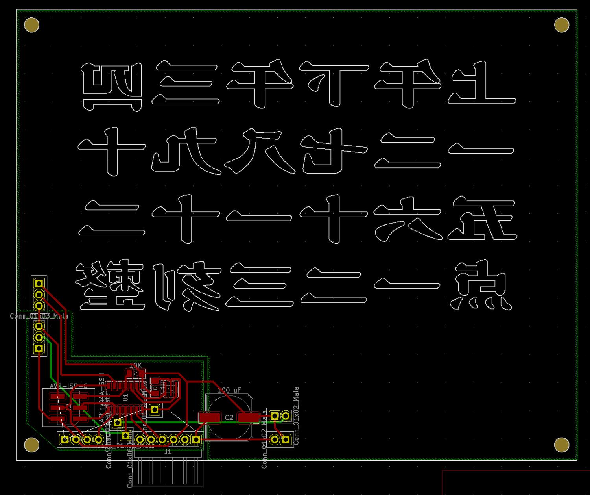
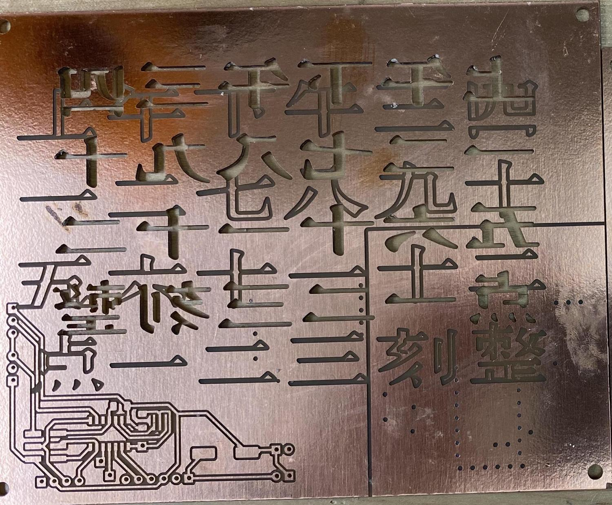
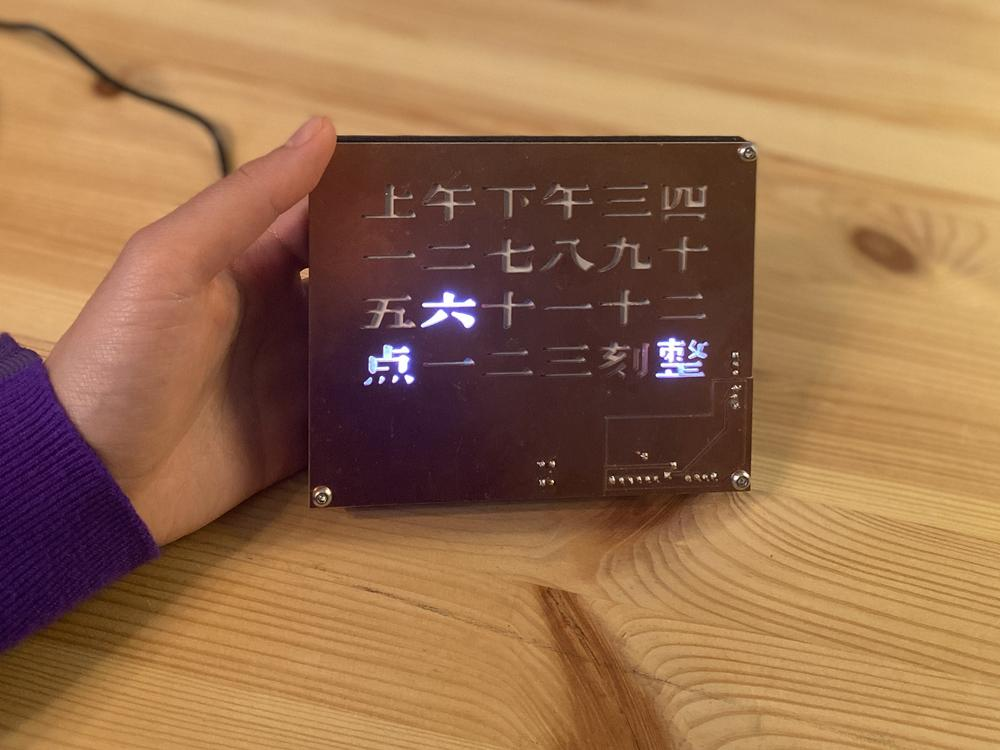
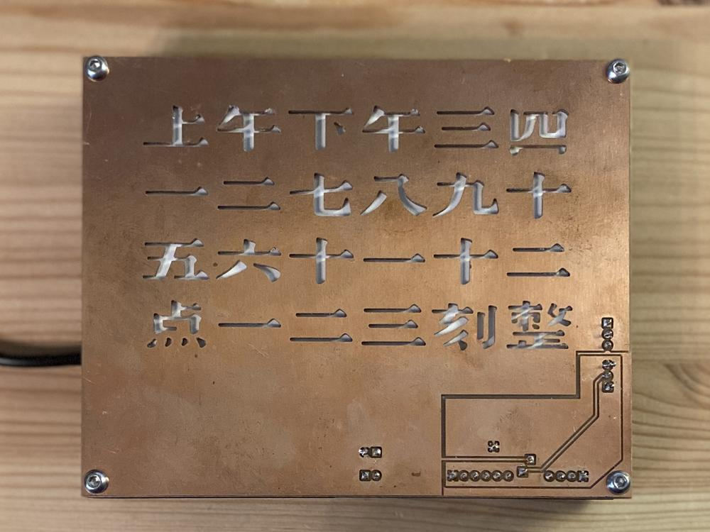

chinese wordclock
This is my final project for Nadya’s #makingit class. It is a word clock, but not so accurately reporting time as it only display time in quarters. I’m pretty happy and proud of myself for finishing this class at all and being able to make something that I can put on my desk everyday and show off to my friends.
A detailed documentation of this project is available for the purpose of reproducing the result. I was trying to improve the design and fix some bugs at the end of last year but I got so carried away in Hawaii.
The idea is to make a touch-activated clock that tells time in words in Chinese. The backside of the circuit board is the capacitive switch.
It was milled on a recycled circuit board.


